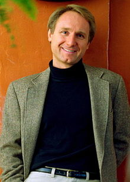

Biografia
Hijo de un matemático y una compositora de música sacra. Estudió en la Phillips Exeter Academy y en el Amherst College. Como estudiante residió en Gijón (España) en el año de 1980, este traslado a España fue su primer viaje al extranjero estudiando en un instituto de dicha ciudad. Brown afirma que en 1985, un año antes de graduarse, estudió Historia del Arte en la Universidad de Sevilla, pero esta universidad declaró que no existen registros de que él hubiese sido estudiante en sus instalaciones, y que en caso de haberlo sido es probable que lo haya hecho como un estudiante itinerante en un simple curso de verano. Diplomado por el Amherst College, se dedicó a la música: produjo una grabación con canciones infantiles y fundó la empresa Dalliance, con la que grabó Perspective.
En 1991 se mudó a Hollywood, California, para continuar con su carrera de pianista y cantautor, mientras se ganaba la vida como profesor de inglés y español en un colegio de Beverly Hills. En la Academia Nacional de Compositores conoció a Blythe Newlon, una mujer quince años mayor, con quien contrajo matrimonio en 1997 después de varios años de convivencia.
Regresaron a Nuevo Hampshire, donde continuó con su carrera musical y dando clases de inglés en la Philix Exeter Academy y de español en la Lincoln Akerman School. En 1993, además, grabó Dan Brown y en 1994 Angels and demons, título que conservaría para su segunda novela.
Pero, todo cambió en el verano de 1993. Mientras estaba en una playa de Tahití, encontró olvidada en una tumbona la novela La conspiración del juicio final (1991), de Sidney Sheldon. Al regresar a Exeter, comenzó a trabajar en Digital Fortress (La fortaleza digital), su primera novela, en la que involucraba en la intriga a la Agencia de Seguridad Nacional (NSA). Este techno-thriller, aparecido en 1998, criticado por su superficialidad y deslices en el tratamiento tecnológico, tuvo un relativo éxito comercial.
En el año 2000 publica Ángeles y demonios, donde aparece por primera vez el personaje Robert Langdon, profesor de simbología religiosa en la Universidad de Harvard que, investigando un misterioso símbolo, se encuentra con la secta de los Illuminati, hermandad que lleva siglos enfrentada a la Iglesia católica.
Al año siguiente aparece Deception Point (2001, traducida al español como La conspiración), libro que motoriza su trama con el descubrimiento de un extraño objeto en el Ártico por parte de un satélite (SOT) de la NASA.
Langdon, el personaje clave de Ángeles y demonios, es también el protagonista de la obra que lo convirtió en fenómeno mundial de superventas, El código Da Vinci, un libro centrado en la búsqueda del significado real del Santo Grial.